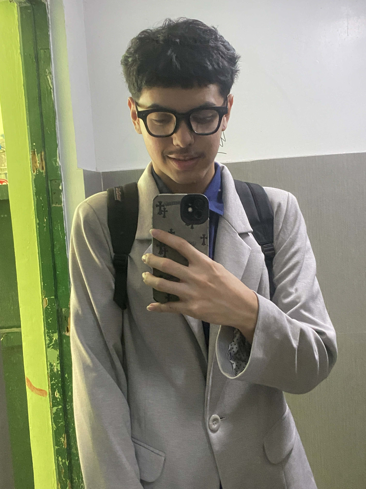
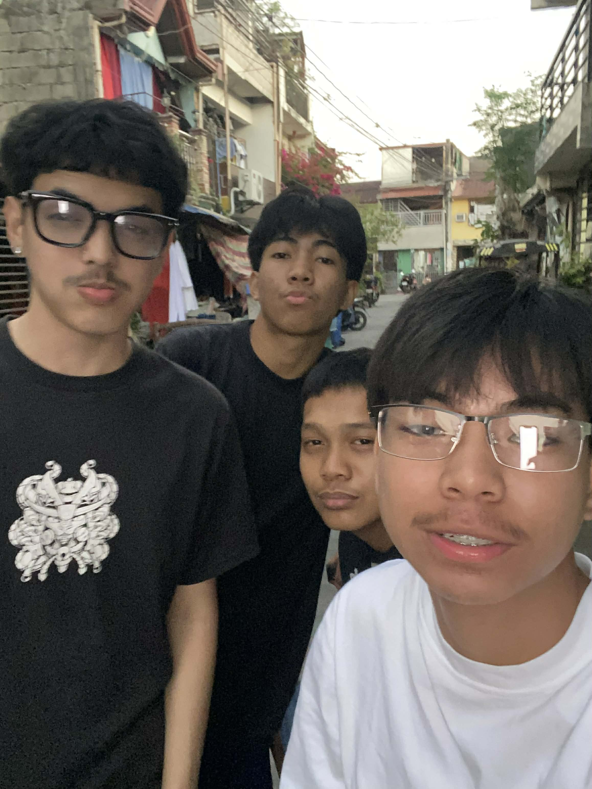
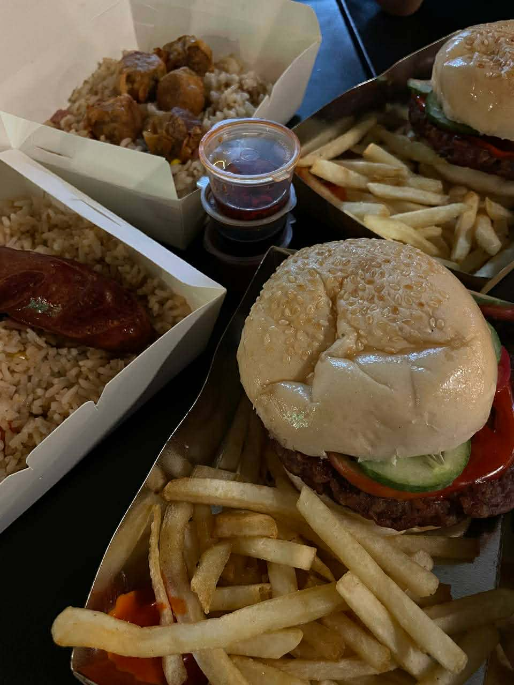
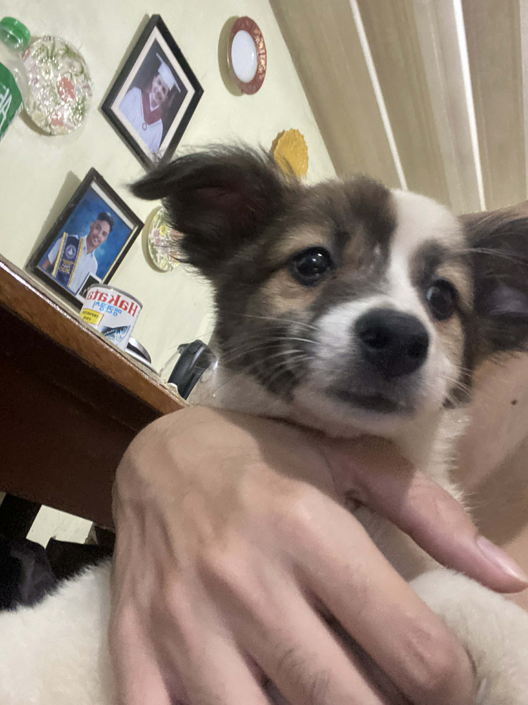
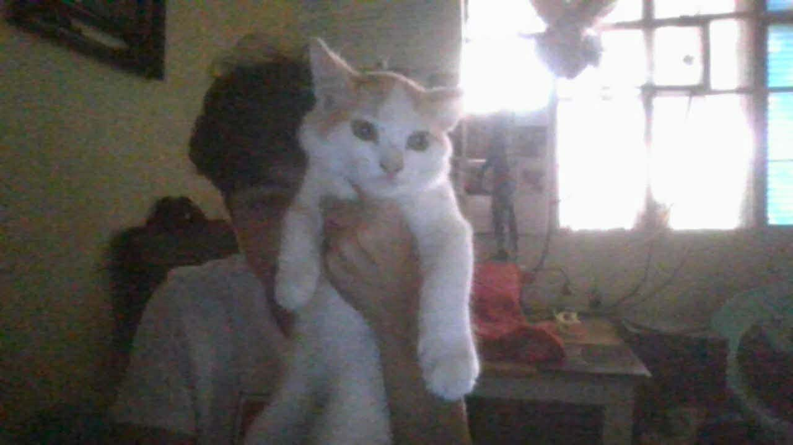
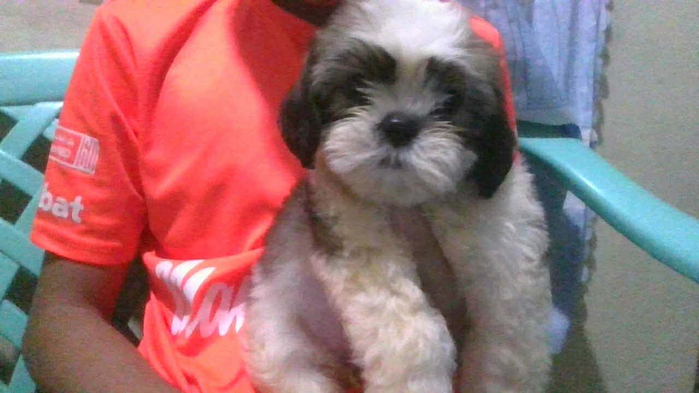

personal website

Hi, I'm Allen. I'm a student and I like doing different things online. Sometimes I explore new stuff, sometimes I just relax and enjoy my free time.
I spend most of my time at school, but after that I usually go on my phone, watch videos, or hang out with friends. I like keeping things simple and chill.
One of my hobbies is hanging out with my friends. We usually just talk, laugh, and go somewhere when we have time. It helps me relax and enjoy the day.
I also enjoy eating a lot especially trying different kinds of food. It’s something I really enjoy whether I’m bored, stressed, or just hungry.
I'm currently learning basic coding like HTML, CSS, and JavaScript. This website is one of my projects, and I’m still improving step by step.
In the future, I want to improve my skills and learn more about technology. I also want to create better projects and become more confident in what I do.

Hanging out with my friends, chilling and going out.

Eating different foods and trying new meals



I also spend time taking care of my pets. I feed them, play with them, and make sure they are okay. It’s something I enjoy doing.
My day usually starts with school, then after that I either rest, use my phone, or go out with friends. Sometimes I also try to learn coding when I feel productive.
I want to improve my skills in technology and become better at coding. I also want to learn more things that can help me in the future.